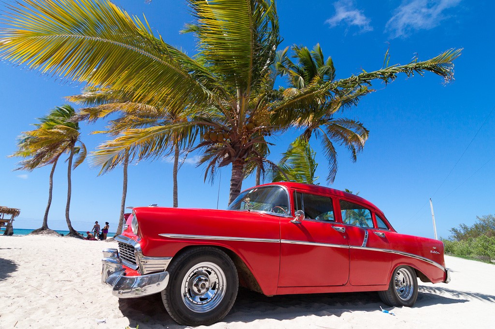
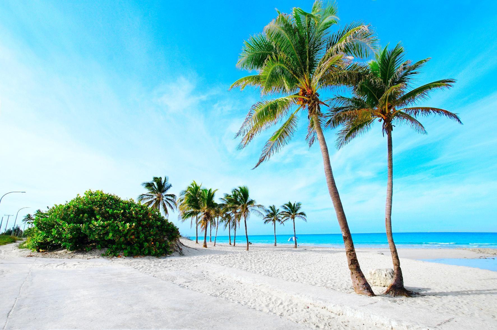
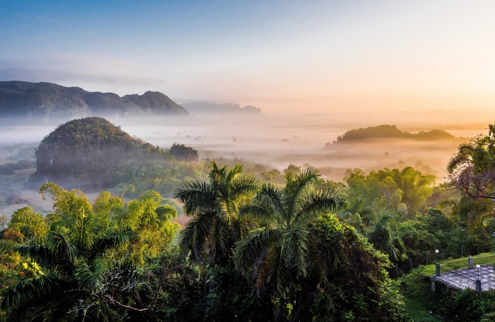
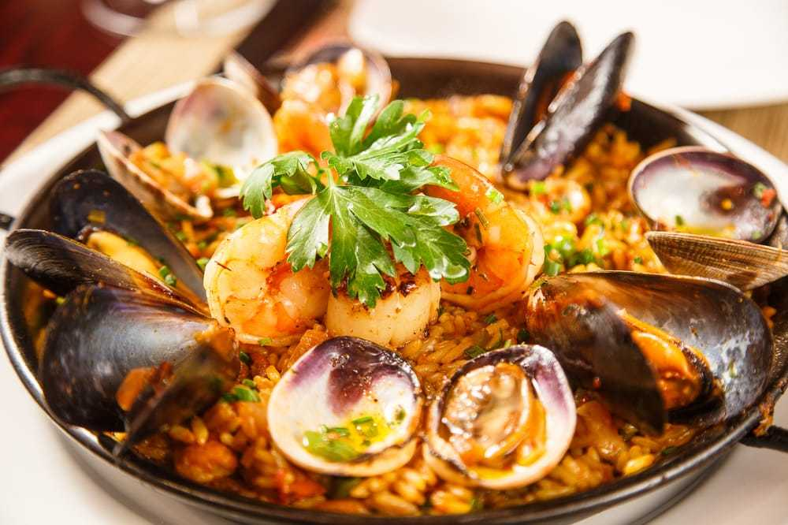
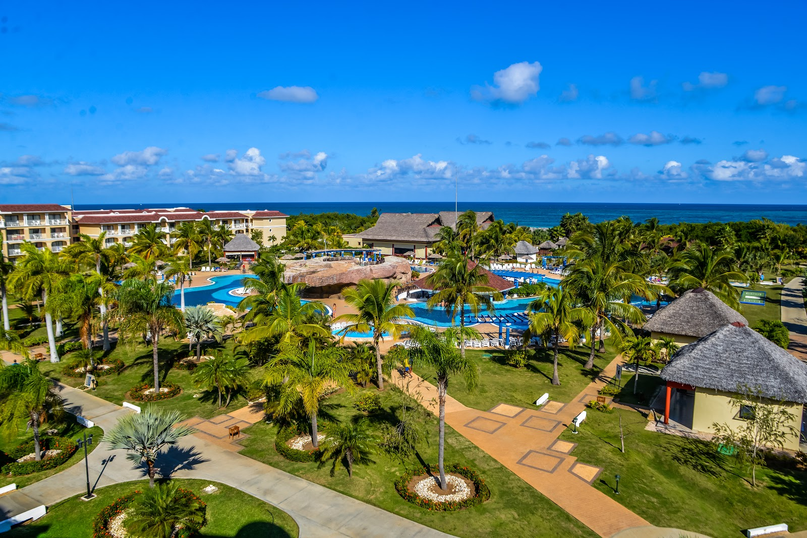
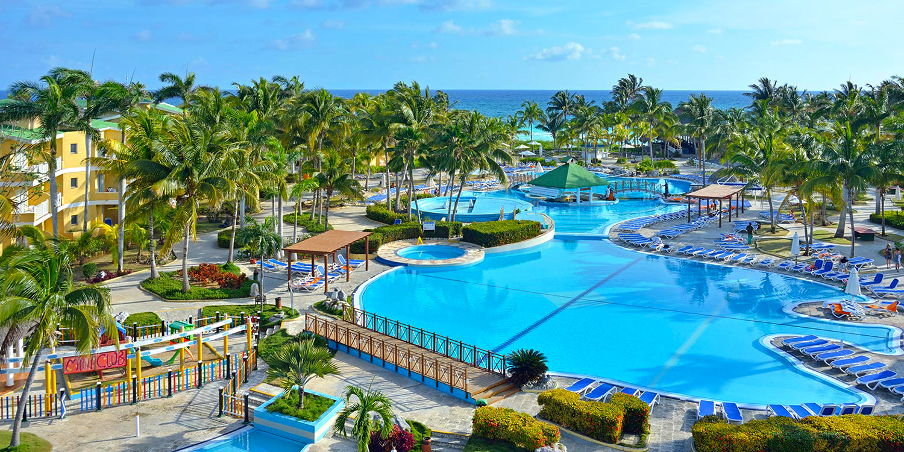
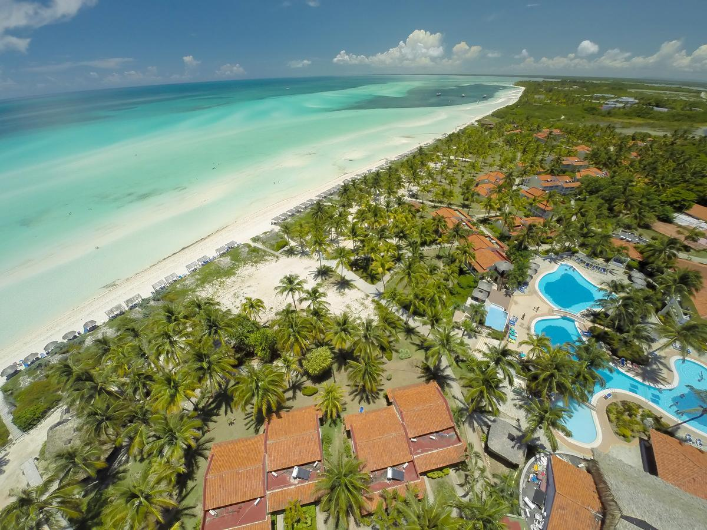
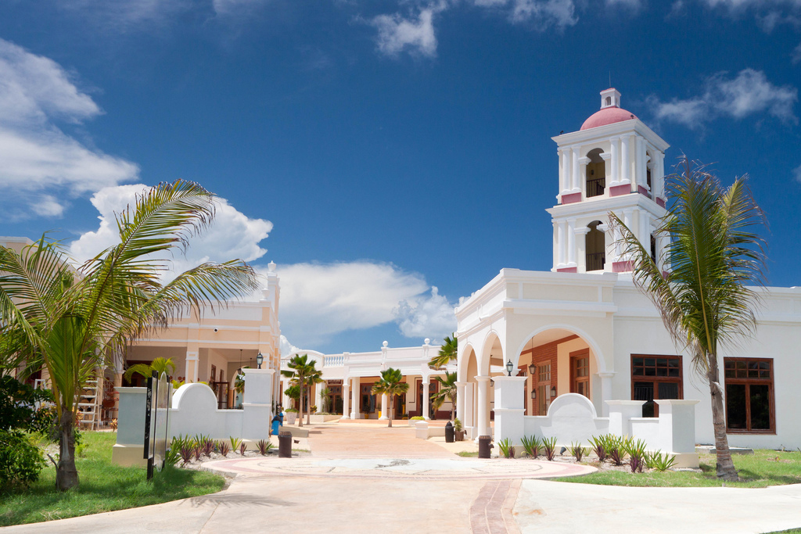

Куба

О стране
Куба – одно из самых популярных туристических направлений Карибского моря: остров свободы и страна вечного лета, ее песчаные пляжи, красочный подводный мир и яркая природа привлекают огромное количество туристов. Это родина лучшего в мире табака, рома и сахара, единственная социалистическая республика Западного полушария, страна с богатой, многовековой историей. Многочисленные природные заповедники здесь сочетаются с роскошными пляжами, социалистический строй страны - с вольным, свободолюбивым народом. Посетив Кубу, вы никогда не забудете мягкое море, ритмы сальсы и вкус коктейля Куба-либре.

Флора и фауна Кубы славится богатством и разнообразием. Здесь имеется более 300 заповедников, которые занимают примерно 22% территории страны. На Кубе растёт четыре процента всей флоры нашей планеты.

Официальный язык на Кубе – испанский. Однако обслуживающий персонал гостиниц ответит Вам на английском, немецком, итальянском языках.
Основные продукты кубинской кухни – свинина и курица, приготовленные различными способами, рис и черная фасоль. Вы можете получить удовольствие от хороших морепродуктов, таких как креветки, лангусты, кагуама (черепаховое мясо), осьминог в чесночном соусе, и, конечно же, экзотические тропические фрукты.

Кубинский песо – один из двух видов валюты, находящихся в официальном обращении на Кубе. Состоит из 100 сентаво. Вторым видом валюты является кубинское конвертируемое песо (CUC), отличающийся наличием надписи «convertible». Конвертируемое песо используется в основном в туристической отрасли, а также в «долларовых магазинах».
Местное время отстаёт от московского на 8 часов.
Куба – это страна богатой истории и национальных традиций, великолепной колониальной архитектуры, незабываемых культурных, исторических и природных достопримечательностей.
Варадеро
Варадеро – основная зона кубинского архипелага, привлекающая всех, кто предпочитает отдых на берегу моря, пользуется заслуженной международной славой. Этот курорт на полуострове Икакос обладает полосой пляжей длиной более чем в 20 км, покрытых тонким белым песком и омываемых морем, которое переливается самыми различными оттенками голубизны; пятая часть его территории входит в состав экологических заповедников. Кроме того, на полуострове есть множество пещер, живописные откосы и лагуны; вдоль побережья тянется череда девственных и легкодоступных островков. Особенности Варадеро дополняются его культурными, историческими и природными достопримечательностями, тесно связанными с соседними городами Матансас и Карденас и заповедником биосферы «Сьенага-де-Сапата», а также рядом современных комфортабельных отелей и широкой инфраструктурой предприятий сферы обслуживания.

Кайо-Коко
Остров и курорт Кайо-Коко входит в цепь островов с красивым названием «Сады короля», расположенных севернее материковой Кубы. Пляжи Кайо-Коко имеют коралловое происхождение и отличаются мягким песком светлого кремового оттенка. А еще здесь можно наблюдать за розовыми фламинго — удивительное зрелище, ради которого собираются туристы с других островов. Курорт станет идеальным выбором для уединенного и роскошного отдыха. Любителям дайвинга будет интересно, что рядом с Кайо-Коко находится второй в мире по протяженности коралловый риф.
На Кайо-Коко располагается собственный международный аэропорт Jardines del Rey Airport. Остров соединен с Кубой 27-ми километровой дорогой-дамбой, которая начинается в кубинском городе Морон, проходит через Кайо-Коко и заканчивается на острове Кайо-Гильермо

Кайо-Гильермо
Кайо-Гильермо – еще один тропический остров в составе архипелага Хардинес-дель-Рей, расположенного вдоль северного побережья Кубы. Этот небольшой по размерам курорт, который весь можно обойти пешком, предоставляет прекрасные возможности для расслабленного пляжного отдыха и романтических каникул. На Кайо-Гильермо расположено всего несколько гостиничных комплексов, каждый из которых предоставляет услуги по системе «все включено». На территории отелей работают магазины, рестораны, бары, а по вечерам проходят развлекательные шоу. Но самое интересное находится за их пределами – гостей ждет практически нетронутая природа и совершенная гармония. На Кайо-Гильермо расположены четыре пляжа, общей длиной около 4 километров, особенно знаменитый из них — пляж Плая-Пилар, названный так в честь яхты Эрнеста Хемингуэя, на которой он выбирался сюда порыбачить. Остров популярен своими песчаными дюнами, мангровыми зарослями и коралловыми рифами.

Кайо-Санта-Мария
Остров Кайо-Санта-Мария вместе с островами Кайо-Коко и Кайо-Гильермо входит в состав архипелага, имеющего романтическое название – Хардинес-дель-Рей, или «Королевские сады». Архипелаг находится под охраной ЮНЕСКО как важнейший биосферный заповедник. Протяженность острова составляет примерно 13 километров в длину и около двух километров в ширину. На острове можно сочетать пляжный отдых с культурной программой: для этого отправляйтесь на экскурсии в революционный город Санта Клара и древний город Сан Хуан-де-лос-Ремедиос. А на соседнем острове Кайо-Энсеначос расположился дельфинарий — туда можно с легкостью добраться на такси.

По всем вопросам свяжитесь с нами любым удобным способом:
E-mail: trohin.zh@yandex.ru
Телефон: +7 (977) 730 95 22
Соцсети: Вконтакте | Instagram | Telegram
Индивидуальный предприниматель Трохин Евгений Альбертович
ИНН 503613656680 / ОГРН ИП 315507400016056
город Москва, Щербинка ул. Юбилейная д.3а
Заполните анкету
Мы подберем идеальный тур, исходя из ваших желаний и эмоционального настроя.